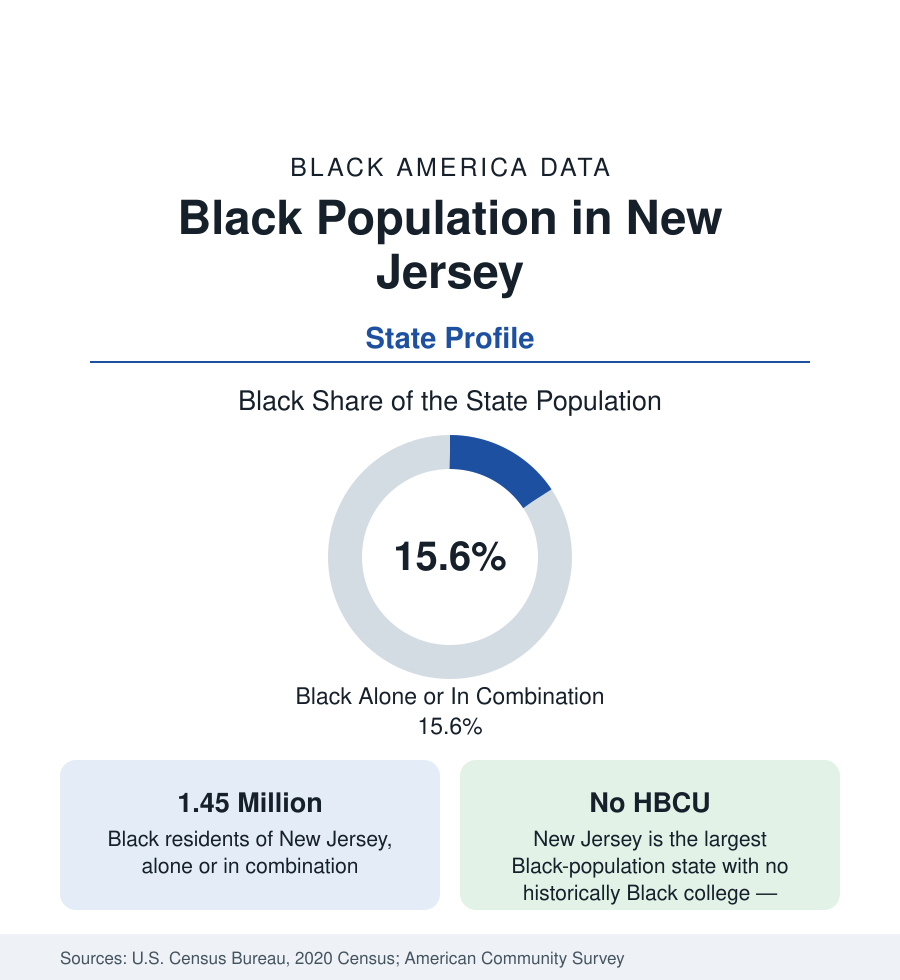

Black Census
Black Population in New Jersey: Newark and the Corridor
About 1.45 million Black New Jerseyans — one in six residents — along the New York–Philadelphia corridor, from Newark to Camden. The census profile.

New Jersey holds about 1.45 million Black residents — Black alone or in combination — roughly one in six of its people, with Black alone at about 1.22 million, or 13 percent. New Jersey's Black population lives almost entirely inside the New York–Philadelphia corridor that defines the state: Newark and the Essex County cities in the north, Trenton at the center, Camden in the south, and a suburban arc between them that includes some of the oldest Black suburbs in the East. This article profiles the population in the census data.
Newark and Essex County
Newark, the state's largest city at about 311,000 people, is roughly half Black — about 150,000 residents — the center of Black New Jersey since the Great Migration filled its Central Ward and the districts beyond. Around it, Essex County holds the state's densest Black suburban landscape: East Orange, more than four-fifths Black; Irvington, at a similar share; Orange and Montclair (the latter famously integrated and affluent); and Bloomfield and West Orange with growing communities. The county's Black population approaches 300,000. Newark's own data record the corridor's pattern: a reviving downtown and port economy, the state's largest transit and logistics employment, and neighborhood indicators — income, health, school outcomes — at the difficult end of the state's tables, against the suburban Essex communities whose figures run near the state's strong averages.
The Suburban Arc and the South
Black New Jersey suburbanized early and thoroughly. Willingboro, in Burlington County, is the canonical case in the housing literature — a Levitt-built suburb that became a majority-Black homeowner community (roughly seven in ten residents) in the postwar decades and held its middle-class character across them. Sicklerville, Franklin Township, Plainfield (roughly two-fifths Black), New Brunswick, Asbury Park, and Atlantic City each hold substantial communities along the corridor. Trenton, the capital, is just under half Black. Camden, across from Philadelphia, is roughly two-fifths Black alongside a large Latino population, in a city whose economic data are among the hardest in the Northeast and whose recent counts show the region's slowest recovery. The shore and the state's northwest hills record the smallest shares.
Institutions: The Missing HBCU
New Jersey is the largest Black-population state in the nation with no historically Black college or university — a distinction its Black students answer by feeding the HBCUs of Pennsylvania (Lincoln, Cheyney), Delaware (Delaware State), and the South at high rates in the enrollment data. Within the state, Black higher education runs through the public system — Rutgers (whose Newark campus is among the most diverse research universities in America), New Jersey City University, Montclair State, Kean, and the community colleges — and the state's Black professional class works the corridor's twin economies: New York-facing finance, pharma (the state's signature industry, concentrated in the central counties), logistics at the port and the Turnpike corridor, and state government in Trenton.
Composition and Change
The corridor's diversity layers through the Black data as well: New Jersey holds one of the nation's larger Caribbean Black populations (Jamaican and Haitian communities across Essex and Union counties) and growing African communities, so that the state's Black foreign-born share is among the highest in this section's state profiles. The estimates show the Black population growing slowly — suburban counties gaining, the older core cities roughly stable — with income and attainment figures that split on the state's internal line: Black New Jerseyans in the suburban counties record figures near the state's high averages, while Newark, Camden, and Trenton record the corridor's other economy.
Reading the New Jersey Numbers
The state's Black political geography follows the same corridor: its largest cities have elected Black mayors across most of the past half-century, and its Black legislative delegation is drawn overwhelmingly from the Essex-to-Camden band — a concentration the district maps share with the population maps.
New Jersey's profile is the corridor state's: 1.45 million people whose labor markets, media, and often identities belong to two great metros outside its borders. Its distinctive contributions to this reference are the Essex County suburban landscape — the East's fullest Black suburban tier — and the HBCU absence that sends its students down the corridor in both directions, a flow the education data record every fall.
More in Black Census
The Black Population of the United States: Size, Definitions, and Distribution
The Black population of the United States totals 52.8 million — 15.4 percent of the nation. How the Census Bureau defines and counts the population, and where it lives.
Black Median Household Income in the United States
Black median household income stands at $56,490 in the Census Bureau's annual income report — how the figure is measured, how it compares, and what drives it.
The Black Poverty Rate: Levels, Children, and the Long Trend
The official Black poverty rate is 17.1 percent — against 11.1 percent nationally and 7.7 percent for non-Hispanic White Americans. How poverty is measured and what the data show.
Source: U.S. Census Bureau, 2020 Census; American Community Survey; Population Estimates Program.